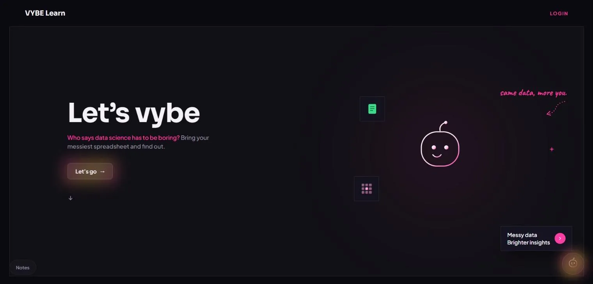

AI / EdTech / Intelligent Learning Systems
Vybe Learn — Personalized Data Science Tutor
September 2026 – Present
Built the MVP of an AI-powered learning platform featuring a multi-agent tutor and adaptive curriculum. Currently gathering user feedback to guide improvements and wider distribution.
How it started. Vybe Learn began as a hackathon project. My team and I decided to take it further: growing it on AWS and learning everything that goes into building a proper product.